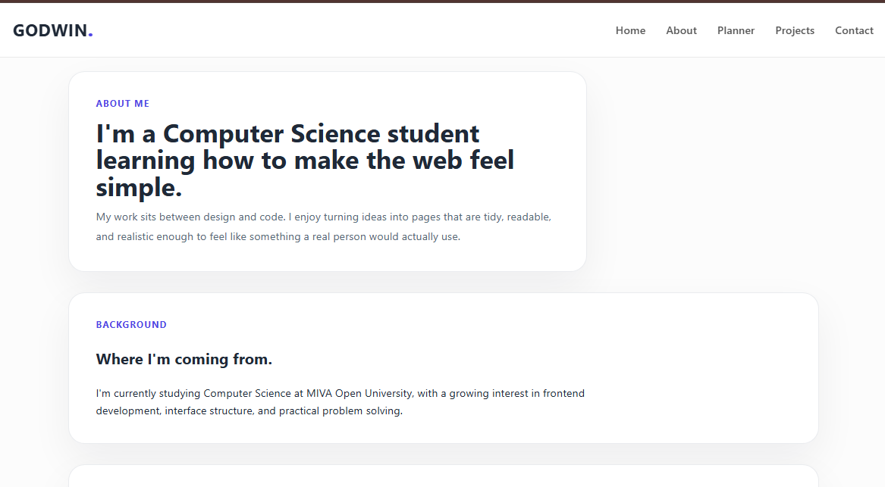
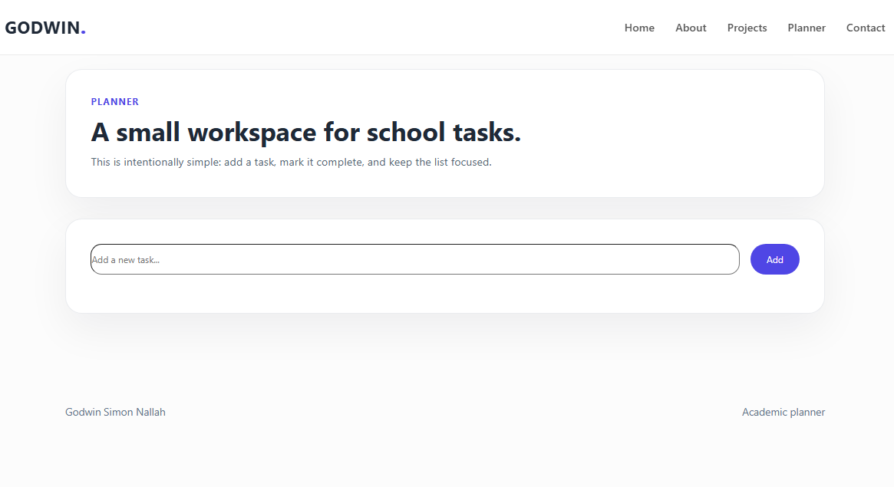
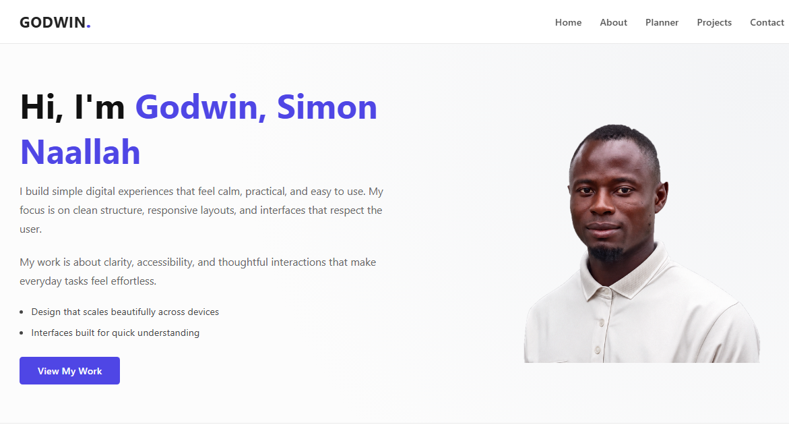

Portfolio site refresh
A cleaner multi-page portfolio with a restrained palette, better hierarchy, and less visual noise.
Projects
Rather than filling the page with big cards, I'm showing the work as a simple list so the content, stack, and outcome stay easy to read.

A responsive about page for showcasing personal information and experience.

A minimalist design for organizing academic tasks and deadlines.

portfolio website showcasing my work and skills.
A cleaner multi-page portfolio with a restrained palette, better hierarchy, and less visual noise.
A lightweight task tool for study planning with quick entry, completion toggles, and local saving.
An exercise in spacing and hierarchy, built to feel realistic without leaning on heavy graphics.
Notes
They demonstrate my interest in clean structure, responsive layouts, and interfaces that respect the user. The work is about clarity, accessibility, and thoughtful interactions that make everyday tasks feel effortless.